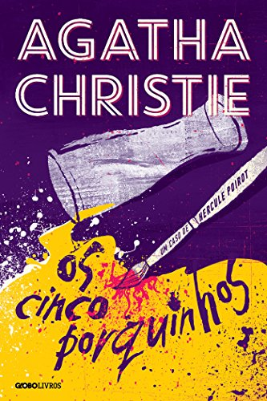
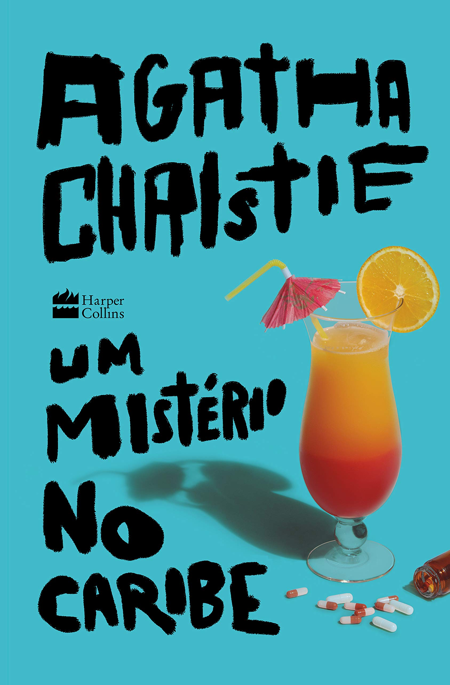
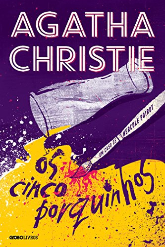
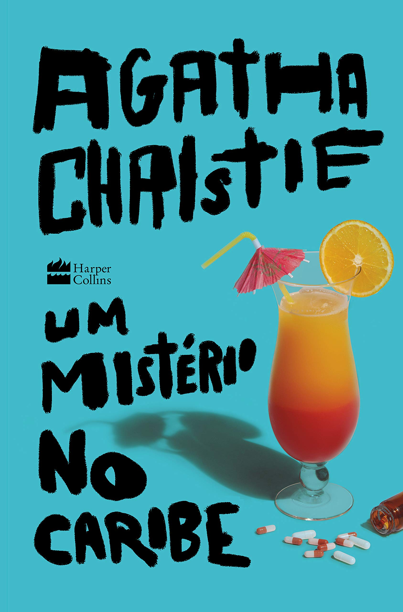

Agatha Christie
Sobre
Nascida Agatha Mary Clarissa Miller, em Torquay, 15 de setembro de 1890, ficou conhecida posteriormente como Agatha Christie. Faleceu em 12 de janeiro de 1976 em Wallingford.
Durante sua carreira publicou mais de 80 livros, alguns sob o pseudônimo de Mary Westmacott.
E ficou conhecida como "Rainha/Dama do Crime".
Segundo o Guiness Book, ela é a romancista mais bem sucedida da história popular mundial em número total de livros vendidos, perdendo apenas para a Bíblia e Shakespeare.
Obras mais famosas
 




Curiosidades
Em 3 de dezembro de 1926, Agatha Christie desapareceu, após seu marido ter pedido o divórcio. E seu carro foi encontrado em um barranco no lago Silent Pool em Newlands Corner, com os faróis acesos. Agatha ressurgiu 11 dias depois sem memória de tudo o que havia acontecido nesses 11 dias. Na busca por Agatha foi a primeira vez que se usou aviões para localizar alguém desaparecido na Inglaterra.
Na série Doctor Who, no episódio "The Unicorn and the Wasp", fala sobre esse desaparecimento dela e que foi por conta de um Vespa Gigante, sendo que Agatha abordou esse tema em alguns de seus livros, depois do seu desaparecimento. (a série é muita boa, assista! ;))
Uma outra curiosidade é que o livro, "E não sobrou nenhum", originalmente tinha o nome "O Caso dos Dez Negrinhos". Por conta do tom pejorativo da palavra a família de Agatha pediu que o título foi alterado. Além disso na história a Ilha do Negro, passou a ser chamada de Ilha do Soldado e as estatuetas dos "negrinhos" também viraram "soldadinhos".

Inspiração
Agatha conseguiu triunfar num período em que as mulheres eram extremamente oprimidas. Conseguiu êxito como escritora ainda durante vida.
Até nos dias de hoje ela mantém sua famosa devido a qualidade das suas obras. Suas histórias que envolve o leitor do início ao fim, sempre com um final chocante.
Atualmente temos mais algumas de suas obras ganhando as telas como Assassinato no Expresso do Oriente e Morte no Nilo, mas o primeiro livro a virar foi Testemunha de Acusação (1957). E também inspira outras obras como o filme "Entre Facas e Segredos".